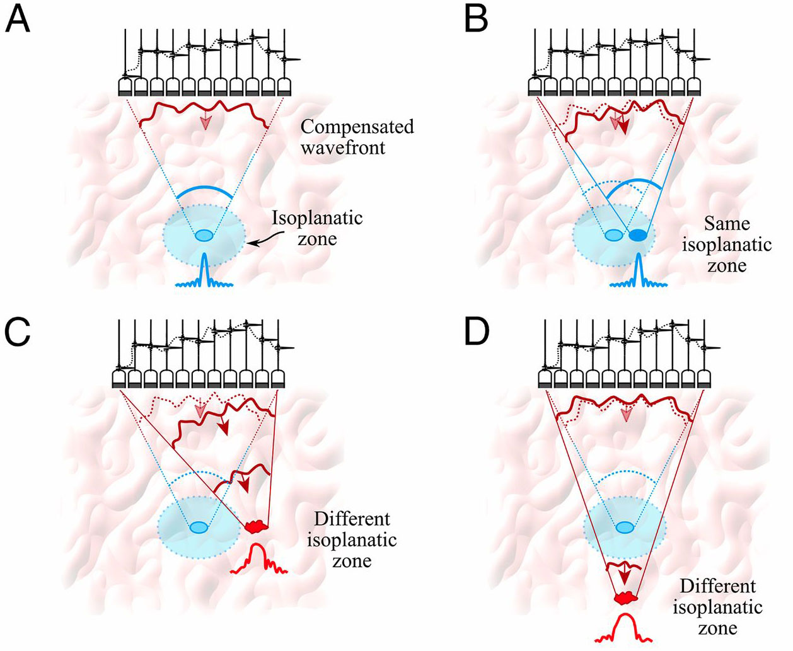
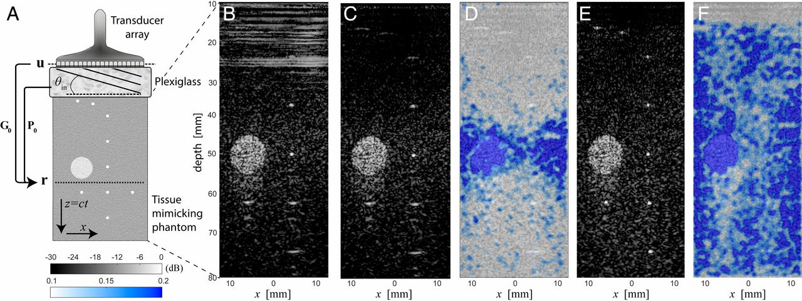
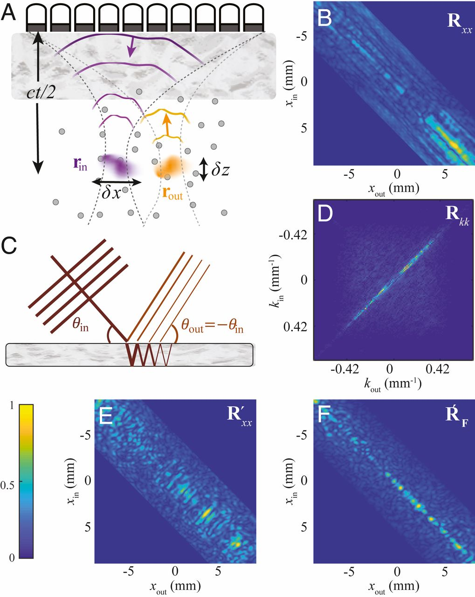

研究意义
超声是一种灵活而强大的医学成像工具．然而，由于器官组织结构存在差异，传播的波会经历不期望的相位变化，从而在图像中产生像差（模糊）．如果事先知道组织的微观结构，就有可能对这些相位偏移进行补偿；但在缺乏任何先验信息时，实现补偿就变得极其困难．
现有的自适应聚焦方法虽然能够在一定程度上减轻像差影响，但通常只在较小的、像差近似不变的局部区域内有效．
在本文中，我们提出了一种基于反射测量、且完全无创的方法，用以获取“传输矩阵”，它将介质内部任意一点与外部的传感器阵列联系起来．这个矩阵堪称成像领域的“圣杯”：我们在此表明，它可以在整个图像上、逐像素地实现接近理想的分辨率和对比度的在体成像．
摘要
在非均匀介质内部实现波的聚焦是成像领域中的一个基本问题．波速的空间变化会强烈畸变传播波前，从而显著降低成像质量．自适应聚焦虽然可以补偿此类像差，但其有效范围通常局限在较小的视场内．
本文提出了一种基于“畸变矩阵”概念的全视场波动成像方法．该算符本质上将介质内部任意聚焦点与从该点发出的波前在传播过程中因非均匀性所经历的畸变联系起来．对畸变矩阵进行时间反转分析，可以估计出连接每个传感器与每个成像体素的传输矩阵．由此，任意位置的相位像差都可以被逐点消除，从而获得一幅具有衍射极限分辨率的介质全视场图像．
尤为重要的是，这一过程在随机散射介质中格外有效，而此类介质正是传统自适应聚焦方法的薄弱之处．本文首先在仿组织体模上给出了实验性概念验证，随后将该方法应用于人体软组织的在体超声成像．尽管本工作是在声学背景下展开的，这一方法同样可以推广到光学显微成像、雷达成像以及地震成像等领域．
介绍
穿过软组织的光、在人体颅骨中传播的超声波以及在地壳中传播的地震波，都是波在非均匀介质中传播的典型例子．在微小尺度上，折射率的非均匀性构成了所谓的散射体，它们会使入射波发生反射．这些后向散射的回波正是实现反射成像所依赖的信号；例如，声学中的超声成像、光学中的光学相干断层成像，以及地球物理学中的反射地震勘探，都是基于这一原理．
然而，从传感器到介质内部某一聚焦点的波传播往往会受到两类效应的严重破坏：
- 由波速在较大尺度上的非均匀性引起的波前畸变（像差）；
- 当散射体过于“亮”（散射过强）和/或过于密集时产生的多重散射．
由于这两种效应会显著降低成像的分辨率和对比度，它们共同构成了各类波动物理成像技术中的最基本限制．
在波动成像领域，最早面对像差问题的是天文学家．为了提高成像质量，他们尝试测量并补偿由大气中折射率空间变化所引起的波前畸变；这就是自适应光学这一概念的由来，其提出可追溯到 20 世纪 50 年代．此后，超声成像和光学显微成像也借鉴了自适应光学的原理，用以校正由界面不平整或组织非均匀性所导致的像差．
以超声成像为例，人们使用换能器阵列发射并记录宽带波场的振幅和相位．通过调节施加在每一路发射和/或接收信号上的时间延迟，可以补偿波前畸变，从而将聚焦点精确地“调节”到介质内部的指定位置（图 1A）．

Fig. 1: 超声成像中的自适应聚焦．
(A) 自适应聚焦通过调节施加在各路发射和/或接收信号上的时间延迟，使波束在介质内部聚焦到指定位置．(B) 在保持同一条自适应相位规律不变的情况下，对其整体“倾斜”（平移）即可在初始焦点附近扫描焦点位置．自适应聚焦仍然有效的这片区域称为各向同性斑块．(C 和 D) 一旦超出这一区域，原来的校正便不再奏效．
传统的自适应聚焦方法通常要求在介质中存在一个占主导地位的散射体（导星），用来提供需要优化的反射信号．在某些情况下可以人为制造这样的导星，但对于非均匀介质而言，后续的聚焦优化仍然难以做到理想．这是因为，从复杂生物样本深处返回的波前，是许多空间上无法分辨的散射体回波的叠加（在图像上表现为散斑），因此要对其进行解析并非易事．
源自恒星散斑干涉技术的一种替代方案，是从反射波场的空间/角度相关性中提取导致像差的相位分布．另一种方案则不是直接测量波前，而是通过直接优化图像质量来校正像差〔也就是以受控的方式调制入射波和/或反射波的波前，使成像逐步收敛到某种最优状态．
然而，这两类方法通常都需要耗时的迭代聚焦过程．更重要的是，它们都基于这样一个假设：在整个视场（FOV）范围内，像差保持不变．对于生物介质，在较大的成像深度下，这种空间不变性的假设显然并不成立．由介质中声速的小尺度变化所引起的高阶像差，只能在图像的局部小区域内视为不变，这些区域在文献中通常被称为“等晕区”（isoplanatic patches）（图 1B–D）．因此，在较大成像深度下，传统自适应聚焦方法的有效视场非常有限，这严重制约了其深部成像性能．
不过，近几年已有若干声学成像研究团队针对非均匀介质给出了令人信服的解决思路：一类方法通过测量并成像介质内部的声速分布，再利用该分布进行图像重建；另一类方法则通过估计并补偿局部的传播时间延迟，来实现像差的局部校正．这些方法都利用了超声换能器阵列的多元特性，从不同阵元记录的信号中提取空间相干性或传播时间差．
在本文中，我们提出了一种更加通用的方案，以充分挖掘换能器阵列所能提供的信息——一种面向波动成像的通用矩阵方法．我们为这一方法建立了严格的数学形式，并将其应用于活体人体成像中的像差校正．
接下来这几段综述高度概括和精炼，比较晦涩．
从历史发展来看，成像中的矩阵方法受到声学领域多元件技术兴起的启发，也基于这样一种认识：用矩阵形式来描述换能器阵列之间的超声波传播是十分自然的．
进入 2010 年代，空间光调制器的出现，使这一透射矩阵（transmission matrix）方法得以推广到光学领域．实验中获取透射矩阵之后，研究者便可以利用多重散射来实现最优的光聚焦，并在漫射层或多模光纤中实现高效的光传输与通信．
然而，透射式构型并不适用于对生物介质进行无创和/或在体成像，这就推动了在背向照明（epi-illumination）构型下的一系列新方法的发展．
反射矩阵已经被证明是在多目标介质中实现聚焦、进行目标探测以及在散射介质中进行能量传递的一种有力工具．也有少量研究在矩阵形式框架下考察了反射成像；然而，与大多数传统自适应聚焦方法一样，它们的有效性仅局限于单一等晕区．直到最近，在矩阵方法框架下才开始对视场内随空间位置变化的像差进行处理．
受 Robert 和 Fink 开创性工作的启发，人们在光学成像中引入了“畸变矩阵” $\textbf{D}$ 的概念．反射矩阵 $\textbf{R}$ 表示的是从介质中反射回来的波前，相比之下，畸变矩阵 $\textbf{D}$ 则包含了相对于理想反射波前的偏离——所谓理想反射波前，是指在不存在介质非均匀性时所能获得的反射波前．
此外，$\textbf{R}$ 通常在同一基底下给出输入与输出之间的响应关系（例如，各个超声换能器阵元之间的响应，或介质内部不同焦点之间的响应），而 $\textbf{D}$ 则关注的是一种“对偶基底（dual basis）”下的响应：即一组入射平面波与介质内部一组焦点之间的响应．在光学成像中，Badon 等人最近表明，对一个大尺度的镜面反射体，矩阵 $\textbf{D}$ 在焦平面上呈现出长程相关性．这类空间相关性可被用来将视场（FOV）分解为一组等晕模态（isoplanatic modes）及其在远场对应的波前畸变．
进一步地，$\textbf{D}$ 的香农熵 $\mathscr{H}$ 还可用于给出该成像问题的有效秩（即视场中等晕区的数量）．随后，这种分解被用于在通过散射介质对平面镜目标成像时，对输出端像差进行校正．
建议补充阅读 Sci. Adv. 6, eaay7170(2020).
在本文中，我们将畸变矩阵方法发展用于声学成像．考虑到医学超声成像的应用需求，我们需要一种不仅能处理镜面反射体成像、还能够应对随机散射介质这一更具挑战情形的方法．超声波在软组织中的传播会进入一种散斑成像状态，此时散射往往源于大量空间上不可分辨散射体的随机分布．除组织与器官界面处的镜面反射外，介质的反射率可视为连续且随机的．
本文中，我们将展示：
- 如何通过把反射矩阵投影到远场来抑制镜面反射和多次混响（杂波噪声），从而获得一个纯随机散斑的工作状态；
- 在这一状态下，$\textbf{D}$ 的远场相关性如何使我们能够在每个等晕区内区分并校正入射端和输出端的像差；
- 位置相关的畸变矩阵又如何使我们能够以非侵入方式获取平面波基与整幅图像所有体素之间的透射矩阵 $\textbf{T}$；
- 如何通过对熵 $\mathscr{H}$ 的最小化，实现对视场内的波速（或折射率）的定量测量．
在全文中，我们的理论推导都通过一个采用仿组织体模的超声实验加以验证，并进一步应用于人体在体超声成像．得益于超声在实验上的高度灵活性，超声成像是我们进行概念验证的理想成像手段．尽管如此，畸变矩阵方法绝不限于某一种波类型，它可推广到任何能够在多组输入与输出之间记录介质响应的幅度与相位的情形．因此，本研究为声学、光学、雷达、地震勘探等诸多波动物理领域提供了重要的发展前景．
结果
利用反射矩阵的共焦成像
研究对象为一块组织仿体，其声速为 $c_p = 1{,}542 \pm 10~\text{m/s}$．该仿体由随机分布、无法分辨的散射体组成，这些散射体产生类似人体组织的超声散斑（图2A中的灰色背景）．仿体中还埋置了八根直径为 0.1 mm、垂直于探头的亚波长尼龙单丝，在图像上表现为白色点状目标．图像中深度 $z = 50~\text{mm}$ 处的亮圆形目标（图2B）是一个高回声圆柱体的截面，该圆柱体内部包含更高密度的不可分辨散射体．在仿体上方放置了一层厚度为 15 mm 的有机玻璃，其声速为 $c_a \sim 2{,}750~\text{m/s}$，用于在成像过程中引入强烈的像差和多次反射（见图2A）．

Fig. 2: 矩阵成像．
(A) $R_{u_0}(t)$ 实验采集示意图．超声换能器阵列与一层有机玻璃紧密接触，有机玻璃上方放置人体组织仿体．对于每一个平面波入射角 $\theta_{\text{in}}$，记录其后向散射波前，作为阵元索引 $u_{out}$ 和时间 $t$ 的函数． (B) 采用声速 $c = 1{,}800~\text{m/s}$ 重建得到的原始超声共焦图像（式(4)）． (C) 去除多次反射后的超声图像； (D) 与之对应的 Strehl 比 $\mathscr{S}$ 分布图． (E) 进行矩阵像差校正后的超声图像； (F) 与之对应的 Strehl 比 $\mathscr{S}_g$ 分布图． 超声图像和 Strehl 比分布图分别采用相同的分贝（dB）灰度显示和线性彩色显示标度．
我们的矩阵成像方法首先从实验获取反射矩阵 $\mathbf{R}$ 开始．为此，将一维超声换能器阵列直接置于有机玻璃层表面进行数据采集（见图 2A）．反射矩阵通过平面波波束形成方法构建：在发射阶段，利用阵列合成不同入射方向的平面波；在接收阶段，由阵列中的每一个独立阵元分别接收并记录回波信号。将所有发射—接收组合对应的数据加以汇总，即可得到反射矩阵．以这种方式获得的反射矩阵记作：
$$ \mathbf{R}\_{\mathbf{u}\theta}(t) \equiv \mathbf{R}(\mathbf{u_{out}}, \theta_{in}, t) $$其中，$\mathbf{u}$ 表示换能器阵元在阵面上的空间位置，$t$ 为飞行时间．实验采集的具体实现细节见“材料与方法”部分．
传统超声图像本质上是一幅介质局部反射率的分布图．通过对接收到的反射矩阵 $\mathbf{R}_{\mathbf{u}\theta}$ 施加合适的时间延迟，可以在后处理阶段同时在发射端和接收端实现聚焦，从而获得这些反射信息．这种聚焦过程同样可以在频域中完成．在频域表示下，利用矩阵运算可以将响应矩阵 $\mathbf{R}$ 投影到不同的数学基上，实现不同数学基之间的转换．
在这里，“基”不是抽象线性代数里的正交基，而是选择用什么参数来描述声波场．
本工作中涉及的各类基如图 2A 所示，分别是：
-
记录基：在本实验中，对应于位于位置 $\mathbf{u}$ 处的换能器阵元；
-
照明基：由入射角为 $\theta$ 的平面波构成；
-
空间傅里叶基：由横向波数 $k_x$ 标记，在该基底中我们将处理像差和多次反射等问题；
-
聚焦基：用于构建超声图像，由介质内部的位置点 $\mathbf{r} = x \hat{\mathbf{x}} + z \hat{\mathbf{z}}$ 组成．
在后文中，我们将在这一矩阵形式框架下，介绍用于局部像差校正和杂波噪声抑制的技术．这种形式的优势在于，它使我们能够在不同的基之间灵活切换，无论是在输入端还是输出端．
我们首先对实验获得的反射矩阵做时间傅里叶变换，得到 $\mathbf{R}_{\mathbf{u}\theta}(\omega)$，其中 $\omega = 2\pi f$ 为波的角频率．为了在不同基底之间变换 $\mathbf{R}\_{\mathbf{u}\theta}$ ，我们引入了自由空间传输矩阵 $\mathbf{P}_0(\omega)$ 和 $\mathbf{G}_0(\omega)$，用于描述本实验中波在这些基底之间的传播．这两个矩阵的各个元素都可由二维格林函数给出：假设介质是均匀的，$\mathbf P_0(\omega)$ 描述了方向为 $\theta$ 的平面波传播到空间点 $\mathbf r$ 时的响应；$\mathbf G_0(\omega)$ 描述了由换能器阵列（阵元位置 $\mathbf u$）发射的波传播到空间点 $\mathbf r$ 时的响应．
$$P_0(\mathbf{r}, \theta, \omega) = e^{\big[i k (z \cos\theta + x \sin\theta)\big]} \tag{1a}$$$$G_0(\mathbf{r}, \mathbf{u}, \omega) = -\frac{i}{4}\mathcal{H}_0^{(1)}\big(k \lvert \mathbf{r} - \mathbf{u} \rvert \big) \tag{1b}$$其中，变量 $x$ 和 $z$ 分别表示图像像素位置 $\mathbf{r}$ 在横向和轴向上的坐标（见图 2A），$\mathcal{H}_0^{(1)}$ 为零阶第一类汉克尔函数，$k = \omega/c$ 为波数．
此时，可以通过如下矩阵乘积，在发射端和接收端同时将 $\mathbf{R}_{\mathbf{u}\theta}(\omega)$ 投影到聚焦基底：
$$ \mathbf{R}_{\mathbf{r}\mathbf{r}}(\omega) = \mathbf{G}_0^{*}(\omega) \times \mathbf{R}\_{\mathbf{u}\theta}(\omega) \times \mathbf{P}_0^{\dagger}(\omega) \tag{2} $$其中，符号 “$^*$” 表示相位共轭，“$\dagger$” 表示共轭转置，“$\times$” 表示矩阵乘积．式 (2) 等效于在后处理中，同时对发射和接收两端进行聚焦波束形成．
对于宽带信号，可以在聚焦基底中实施“弹道时间门控”，仅保留在弹道时间 $t = 0$ 抵达的回波分量．该过程的更详细说明见文献 (45)．具体做法是：只考虑位于同一深度 $z$ 的一对虚拟换能器
$$ \mathbf{r}\_{in} = (x_{in}, z) \quad \text{和} \quad \mathbf{r}\_{out} = (x_{out}, z) $$如图 3A 所示．我们将聚焦反射矩阵在这一子空间中的部分记为
$$ \mathbf{R}\_{xx}(z,\omega) = \big[ R(x_{out}, x_{in}, z, \omega) \big] $$随后，在频带宽度 $\delta\omega$ 上进行相干积分，得到宽带聚焦反射矩阵
$$ \mathbf{R}\_{xx}(z) = \int_{\omega_-}^{\omega_+} \mathrm{d}\omega \, \mathbf{R}_{xx}(z,\omega) \tag{3} $$其中 $\omega_\pm = \omega_0 \pm \frac{\delta\omega}{2},$ 而 $\omega_0$ 为中心角频率．
矩阵 $\mathbf{R}\_{xx}(z)$ 的每一个元素，都可以理解为如下情形下的接收信号：位于 $\mathbf{r}\_{in} = (x_{in}, z)$ 的虚拟声源，在中心频率 $\omega_0$ 处发射一个时长 $\Delta t = \delta\omega^{-1}$ 的短脉冲后，位于 $\mathbf{r}\_{out} = (x_{out}, z)$ 的虚拟换能器紧接其后所探测到的回波．
需要强调的是，与单频聚焦得到的 $\mathbf{R}_{xx}(z,\omega)$（见式 (2)）相比，宽带聚焦反射矩阵所对应的虚拟换能器在轴向上的等效尺寸大幅缩小，从而显著提升了后续分析的精度和空间分辨率．

Fig. 3: 利用矩阵方法去除多次反射．
(A) 对 $\mathbf{R}_{\mathbf{u}\theta}$ 施加聚焦波束形成（见式 (2)、(3)），得到聚焦反射矩阵 $\mathbf{R}\_{\mathbf{r}\mathbf{r}}$．其中包含了在每一深度 $z$ 处，虚拟换能器 $\mathbf{r}\_{\text{in}}$ 与 $\mathbf{r}\_{\text{out}}$ 之间的脉冲响应集合． (B) 深度 $z = 25~\text{mm}$ 处矩阵 $\mathbf{R}\_{xx}$ 的模值分布． (C) 平行界面之间多次反射的示意图． (D) 由 (A) 步得到并根据式 (6) 转换后的矩阵 $\mathbf{R}\_{k k}$ 的模值分布． (E) 在 $\mathbf{R}\_{k k}$ 中消除主反对角线 $k_{\text{in}} + k_{\text{out}} = 0$ 分量后，根据式 (8) 得到的矩阵 $\mathbf{R}'\_{x x}$ 的模值分布（见“材料与方法”）． (F) 由估计算子 $\tilde{\mathbf{T}}$（式 (27)）构建的滤波矩阵 $\mathbf{R}_F$ 的模值分布． 图 (B) 及 (D)–(F) 中的矩阵均已按各自最大值归一化处理．
需要注意的是，这个矩阵其实也可以直接在时域中由记录的矩阵 $\mathbf{R}_{u\theta}(t)$ 构建出来．具体而言，可以对来自每个焦点 $\mathbf{r}$ 的回波信号进行相干叠加，从而在介质内部综合出一组虚拟接收器．实际操作中，这一步可以通过对记录信号施加合适的时间延迟来完成．
对每一个入射平面波，将记录信号反向传播后得到的波场再做相干求和，就可以在每个焦点位置事后合成一个“合成焦点”（即虚拟声源）．最后，式 (3) 所描述的时间门控步骤，如果放在时域来理解，就是仅保留在预期弹道时间到达的那部分回波．
在近期的一项工作中，已经证明宽带聚焦反射矩阵 $\mathbf{R}\_{xx}(z)$ 是一个非常有价值的观测量，可用于在局部评估聚焦质量，并定量表征超声数据中的多重散射水平．在本文中，$\mathbf{R}\_{xx}(z)$ 被用作后续处理的基本单元：
- 由其构建样品反射率的共焦图像；
- 并以此为起点，开展之后所有的像差校正过程．
图 3B 给出了深度 $z = 25~\text{mm}$ 处的矩阵 $\mathbf{R}\_{xx}(z)$．其对角元的高亮度是单次散射回波的典型特征．实际上，$\mathbf{R}\_{xx}(z)$ 的对角线，正对应于共焦或复合超声图像 $\mathscr{I}(\mathbf{r})$ 在深度 $z$ 处的那一条线：
$\mathscr{I}(\mathbf{r}) \equiv \big| R(x_{\text{out}} = x_{\text{in}}, x_{\text{in}}, z) \big|^{2} \tag{4}$
图 2B 展示了由此得到的仿体—有机玻璃系统的图像 $\mathscr{I}(\mathbf{r})$．该图像是在假定介质均匀的条件下重建的：计算 $\mathbf{P}_0$ 和 $\mathbf{G}_0$（式 (1a)、(1b)）时采用的声速为 $c = 1{,}800~\text{m/s}$． 这个声速值并不是根据对介质的先验知识来选取的，而是通过反复试探、主观挑选“肉眼看起来像差最小”的图像得到的——这也是临床医生和操作技师常用的经验方法． 然而，即使采用了这个“最优”的 $c$，图 2B 中的图像仍然明显受到上覆有机玻璃层的劣化，主要原因有两点：
- 有机玻璃板与探头之间的多次混响产生了强烈的水平镜面回波；
- 由于均匀传播模型与实际非均匀介质之间存在失配，入射和接收端的焦斑严重畸变（见图 1C 和 1D）．
在下文中，我们将展示：基于矩阵的波场成像方法特别适合用来校正上述两类问题．该处理流程涉及的全部数学运算，在补充材料的图 S1 中以流程图形式进行了概述．
利用远场反射矩阵去除多次混响
在医学超声成像中，混响信号是一类常见问题，通常来源于声波在组织边界或人体骨骼之间发生的多次反射．在本研究中，我们在图像浅层区域可以观察到明显的水平伪影（图 2B）．这些伪影对应的正是经过多次反射的波——在文献中通常称为“混响”——它们主要在有机玻璃层两侧近似平行的界面之间往返反射所产生．接下来我们将展示，这类信号可以通过反射矩阵进行分离和抑制．
为了将反射矩阵投影到远场，我们定义自由空间传输矩阵 $\mathbf{T}_0$，它对应傅里叶变换算子．该矩阵把傅里叶空间中的横向波数 $k_x$ 与假定均匀介质中任意空间点 $\mathbf{r}$ 的横向坐标 $x$ 关联起来，其矩阵元为：
$$ T_0(k_x, x) = e^{i k_x x} \tag{5} $$这样，每个深度 $z$ 上的矩阵 $\mathbf{R}\_{xx}(z)$ 都可以通过如下矩阵乘积投影到远场：
$$ \mathbf{R}\_{kk}(z) = \mathbf{T}_0 \times \mathbf{R}\_{xx}(z) \times \mathbf{T}_0^{\mathrm{T}} \tag{6} $$其中上标 $\mathrm{T}$ 表示矩阵的转置运算．由此得到的矩阵：
$$ \mathbf{R}\_{kk}(z) = [R(k{\mathrm{out}}, k_{\mathrm{in}}, z)] $$包含了样品在深度 $z$ 处，对于入射波数 $k_{\mathrm{in}}$ 与出射波数 $k_{\mathrm{out}}$ 之间的反射系数．图 3D 给出了在 $z = 25 \mathrm{mm}$ 处的一个远场反射矩阵 $\mathbf{R}\_{kk}(z)$ 示例．出人意料的是，该矩阵在其主反对角线（$k{\mathrm{out}} + k_{\mathrm{in}} = 0$）附近的反射能量显著增强，占据主导地位．
为理解这一现象，可以将反射矩阵 $\mathbf{R}\_{kk}(z)$ 写成如下形式：
$$\mathbf{R}_{kk}(z) = \mathbf{T}(z) \times \boldsymbol{\Gamma}(z) \times \mathbf{T}^{\mathrm{T}}(z) \tag{7}$$其中
$$\boldsymbol{\Gamma}(z) = [\Gamma(x, x', z)]$$描述介质内部的散射过程．在单次散射条件下，$\boldsymbol{\Gamma}(z)$ 为对角矩阵，其对角元即为介质在深度 $z$ 处的反射率分布 $\gamma(x, z)$．$\mathbf{T}(z)$ 则是傅里叶基底与深度为 $z$ 的焦平面之间的真实传输矩阵．该矩阵的每一列都对应样品内部某一点 $\mathbf{r} = (x, z)$ 作为点源发射时，在远场中将被探测到的波前．
在补充材料 SI 的 S1 节中，在单次散射条件并采用等相位（isoplanatic）假设的前提下，推导出了远场反射矩阵 $\mathbf{R}\_{kk}$ 的理论表达式．值得注意的是，其中矩阵元
$R(k_{\mathrm{out}}, k_{\mathrm{in}}, z)$
的模平方被证明与像差无关，它直接给出了散射介质在深度 $z$ 处的空间频率谱：
$$ \left| R(k_{\mathrm{out}}, k_{\mathrm{in}}, z) \right|^{2} = \left| \tilde{\gamma}(k_{\mathrm{out}} + k_{\mathrm{in}}, z) \right|^{2} $$其中
$$ \tilde{\gamma}(k_x, z) = \int \mathrm{d}x \\, \gamma(x, z) \\, e^{- i k_x x} $$是样品反射率 $\gamma(x, z)$ 关于横向坐标的一维傅里叶变换．在单次散射条件下，矩阵 $\mathbf{R}\_{kk}$ 沿其各条反对角线表现出确定性的相干结构，这可以看作反射记忆效应的一种体现．每一条满足 $k_{\mathrm{in}} + k_{\mathrm{out}} = \text{constant}$ 的反对角线，都编码了样品反射率中的一个空间频率分量．
对于本文研究的成像系统，在有机玻璃两平行表面之间发生的多次反射满足 $ k_{\mathrm{in}} + k_{\mathrm{out}} = k_0 \sin \theta_0 $，其中 $ k_0 = \omega_0 / c $ 是对应中心频率的波数，$\theta_0$ 为有机玻璃上表面与换能器阵列之间的夹角（见图 3C）．因此，这类反射的特征应当出现在矩阵 $\mathbf{R}\_{kk}$ 的主反对角线 $(k_{\mathrm{in}} + k_{\mathrm{out}} = 0)$ 上．
我们可以利用 $\mathbf{R}\_{kk}$ 中这种稀疏特征，在不受有机玻璃所引起像差影响的前提下对混响信号进行滤除（见“材料与方法”）．随后，对滤波后的矩阵 $\mathbf{R}'\_{kk}$ 施加与式 (6) 相反的运算，就可以得到一个经滤波的聚焦反射矩阵：
$\mathbf{R}'\_{xx}(z) = \mathbf{T}_0^{\dagger}(z) \times \mathbf{R}'_{kk}(z) \times \mathbf{T}_0^{*}(z). \tag{8}$
图 3E 给出了 $\mathbf{R}'\_{xx}$ 的一个示例．与原始矩阵（图 3B）对比可以看出，反射波场中低空间频率的分量已经从 $\mathbf{R}\_{xx}$ 的对角线上被去除．此时得到的 $\mathbf{R}'\_{xx}$ 仅呈现随机的对角元素，这是超声散斑的典型特征． 最后，图 2C 展示了由 $\mathbf{R}'\_{xx}$（式 (4)）计算得到的整幅图像．多次反射的去除，使得原本被掩盖的浅层亮目标得以显现．然而，该共聚焦图像仍然存在像差问题，尤其是在较浅和较深的成像深度处（图 2C）．
散斑条件下的畸变矩阵
在文献 42 中，畸变矩阵（distortion matrix）的概念最初是为强像差条件下的大尺度镜面反射体的光学成像提出的．这里我们说明如何将这种畸变矩阵的方法推广到散斑成像条件下．
像差的表现形式
在图 3E 中，可以看到 $\mathbf{R}'{xx}$ 的能量在非对角元素上有显著扩散．这一现象正是图 3A 所示像差的直接表现．为理解这一点，可以将 $\mathbf{R}'\_{xx}$ 利用式 (7) 和式 (8) 重写为
$\mathbf{R}'\_{xx}(z) = \mathbf{H}(z) \times \boldsymbol{\Gamma}(z) \times \mathbf{H}^{\mathrm{T}}(z) \tag{9}$
其中
$\mathbf{H}(z) = \mathbf{T}_0^{\dagger} \times \mathbf{T}(z).$
我们将 $\mathbf{H}(z)$ 称为聚焦矩阵，是因为 $\mathbf{H}(z)$ 的每一行都对应一个输入或输出焦点在空间中的振幅分布（见图 1C 和 1D）．式 (9) 表明，当聚焦矩阵 $\mathbf{H}(z)$ 不是对角矩阵时，就会在 $\mathbf{R}'\_{xx}(z)$（图 3E）中出现这种非对角能量扩散．换句话说，当自由空间传输矩阵 $\mathbf{T}_0$ 不能很好地逼近真实传输矩阵 $\mathbf{T}(z)$ 时，便会出现这种情况．
之所以会这样，是因为我们对介质本身的信息不足，从而无法正确构造 $\mathbf{T}_0$——尤其是在声速分布未知时．正是这种由样品本身引起的像差，导致了 $\mathbf{R}'\_{xx}(z)$ 中能量向非对角元素的扩散，最终表现为共聚焦图像某些区域分辨率较差（图 2C）．
记忆效应
为了分离并校正这些像差效应，我们利用波动物理中一个重要的物理现象，通常被称为“记忆效应” 或“等相性 (isoplanatism)” 。这一现象通常在平面波基底下进行描述：当入射平面波绕光轴旋转一个角度 $\theta$ 时，远场中的散斑图样会随之平移同样的角度 $\theta$；如果是在反射构型下测量，则散斑图样会以角度 $-\theta$ 发生偏移。
有趣的是，这类“场–场”相关性在实空间中同样存在：在复杂介质内部，由空间位置相近的点源所辐射的波，会在远场产生高度相关、但整体发生倾斜的随机散斑图样。在聚焦基底下，这种行为可以看作：在一块被称为“等相区域 (isoplanatic patch)”的空间范围内，点扩散函数（或焦点形状）在空间上保持不变。
在像差校正方面，我们采用的策略如下：
-
通过构建一个双基底矩阵——即畸变矩阵（distortion matrix）——来凸显这些空间相关性。该矩阵将介质内部任意一个输入焦点，与远场中相应反射波前所表现出的畸变联系起来；
-
利用这些相关性，在同一双基底下对传输矩阵 $\mathbf{T}(z)$ 进行精确估计。
揭示隐藏的相关性
为了从反射矩阵中分离出像差的影响，首先利用自由空间传输矩阵 $\mathbf{T}_0$，在接收端将 $\mathbf{R}'\_{xx}(z)$ 投影到傅里叶基底：
$$ \mathbf{R}\_{kx}(z) = \mathbf{T}_0 \times \mathbf{R}'\_{xx}(z). \tag{10} $$由于这里讨论的像差层在横向上是平移不变的，我们本可以预期记忆效应会在矩阵 $\mathbf{R}\_{kx}(z)$ 中表现为长程相关性，即在其不同行或列之间出现重复的模式。然而，实际情况并非如此：如图 4C 示意所示，不同位置的输入聚焦点，在远场中会对应不同倾角的波前（详见补充材料 SI 的 S1 节及图 S2）。这种几何效应掩盖了本可用于区分不同等相区域的相关性。